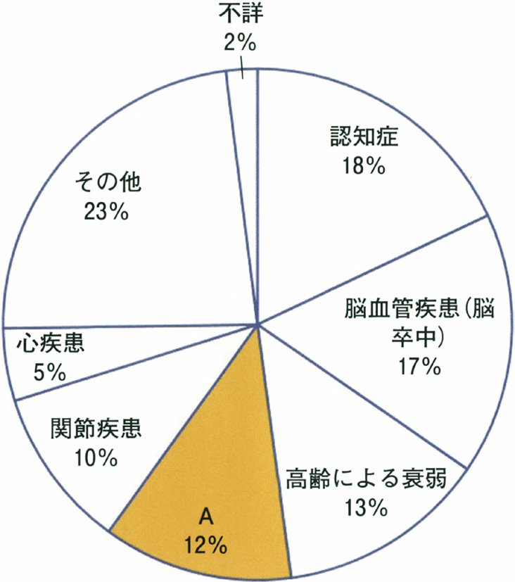

| 選択肢 | 解説 |
|---|---|
| ａ 訪問栄養指導 | 誤り。訪問栄養指導は低栄養・摂食嚥下機能低下・特別な食事療法が必要な場合に管理栄養士が行うサービスである。本症例は食事が自立しており、栄養状態に関する記載も無い——「高齢者だから念のため」で選ぶ肢ではない。 |
| ｂ 訪問入浴介護 | 誤り。訪問入浴介護は自宅の浴槽での入浴が困難な要介護者に簡易浴槽を持ち込んで入浴を介助するサービスである。本症例は「入浴、食事および整容は自立している」と明記されており、入浴に介助を要するという記載が無い。⚠️ 「高齢者＝入浴介助が要る」という先入観で選ぶと外す典型——問題文の自立度の記載を必ず先に確認する。 |
| ｃ 訪問薬剤管理 | 誤り。訪問薬剤管理指導は薬剤師が自宅を訪問し服薬状況を確認・指導するサービスで、認知機能低下や多剤併用で自己管理が困難な患者が対象である。本症例は「認知機能に問題はなく、服薬管理はできる」と明記されており対象外。 |
| ｄ ショートステイ | 誤り。ショートステイ（短期入所生活介護）は家族が旅行・冠婚葬祭・介護疲れ等で一時的に介護できないときに数日間施設に入所するサービスである。本症例には同居の息子がおり、息子の介護負担や不在に関する記載は無い——在宅生活の継続が前提の症例で、施設入所を急ぐ根拠が無い。 |
| ◯ ｅ 通所リハビリテーション | ◯ 正しい。この患者は肺炎に伴う廃用性のADL低下（歩行器が必要になった）を来しており、退院後も機能を維持・回復するためのリハビリテーションが必要である。通所リハビリテーション（デイケア）は介護老人保健施設・病院等に通い、理学療法士・作業療法士等から機能訓練を受けるサービスで、外来診療（医学的フォロー）と福祉用具貸与（歩行器の継続利用）を予定しているという記載とも整合する——「移動機能が落ちた高齢者に何を足すか」を素直に問う設問。 |
| サービス | 担い手 | 対象 |
|---|---|---|
| 通所リハビリテーション | PT・OT・ST等（施設に通所） | 身体機能の維持・回復 |
| 訪問看護 | 看護師（自宅を訪問） | 医療的な観察・処置（褥瘡・ストーマ・カテーテル管理等） |
| 訪問入浴介護 | 介護職員等（自宅を訪問） | 自宅浴槽での入浴が困難な者 |
| 訪問薬剤管理指導 | 薬剤師（自宅を訪問） | 服薬管理が自力でできない者 |
| 訪問栄養指導 | 管理栄養士（自宅を訪問） | 低栄養・特別な食事療法が必要な者 |
| ショートステイ | 施設（短期入所） | 家族の介護負担軽減・一時的な不在への対応 |
| 原因 | 令和4年 |
|---|---|
| 認知症 | 16.6%（第1位） |
| 脳血管疾患（脳卒中） | 16.1%（第2位） |
| 骨折・転倒 | 13.9%（第3位） |
| 高齢による衰弱 | 13.2%（第4位） |
| 関節疾患 | 10.2%（第5位） |
| 心疾患（心臓病） | 5.1% |
| その他・不明・不詳 | 25.0% |
| 選択肢 | 解説 |
|---|---|
| ◯ ａ 認知症 | ◯ 正しい。令和4年の国民生活基礎調査（厚生労働省）では、要介護となった原因の第1位は認知症 16.6%である。第2位は脳血管疾患（脳卒中）16.1%で、この2つがほぼ拮抗して上位を占める。 |
| ｂ 関節疾患 | 誤り。関節疾患は10.2%で第5位相当にとどまる。運動器疾患ではあるが、認知症・脳血管疾患・骨折転倒・高齢による衰弱の4つより頻度は低い。 |
| ｃ Parkinson病 | 誤り。Parkinson病は個々の神経疾患としては重要だが、要介護原因の統計における主要カテゴリー（認知症・脳血管疾患・骨折転倒・高齢による衰弱・関節疾患・心疾患）には独立した項目として挙がらないほど頻度は低い。 |
| ｄ 心疾患（心臓病） | 誤り。心疾患は5.1%で、主要6カテゴリーの中では最も低い部類である。 |
| ｅ 悪性新生物（がん） | 誤り。死因の第1位である悪性新生物だが、"要介護となる原因"としては主要カテゴリーの上位には入らない——「死因の第1位＝要介護原因の第1位」ではないことに注意（死因統計と要介護原因統計は別の調査・別のランキング）。 |
| 職種 | 主な役割 |
|---|---|
| 保健師 | 介護予防ケアマネジメント・健康相談 |
| 社会福祉士 | 総合相談支援・権利擁護（虐待対応・成年後見） |
| 主任介護支援専門員 | 包括的・継続的ケアマネジメント支援（ケアマネへの助言） |
| 選択肢 | 解説 |
|---|---|
| ◯ ａ 保健師 | ◯ 正しい。地域包括支援センターには保健師（またはこれに準ずる者）の配置が義務付けられている。保健師は主に介護予防ケアマネジメント（要支援者の予防給付ケアプラン作成、健康相談）を担う。 |
| ｂ 介護福祉士 | 誤り。介護福祉士の配置は義務付けられていない。介護福祉士は実際の介護（食事・排泄・入浴等の身体介護）を担う国家資格で、地域包括支援センターが担う「総合相談・ケアマネジメント・権利擁護」という業務とは性格が異なる。 |
| ◯ ｃ 社会福祉士 | ◯ 正しい。社会福祉士の配置が義務付けられている。社会福祉士は主に総合相談支援・権利擁護（虐待対応・成年後見制度の活用支援・消費者被害対応等）を担う。 |
| ｄ 理学療法士 | 誤り。理学療法士（PT）の配置は義務付けられていない。PTが常駐して機能訓練を行うのは介護老人保健施設や通所リハビリテーション事業所であり、地域包括支援センターの必須職種ではない（NO.163参照）。 |
| ◯ ｅ 主任介護支援専門員〈ケアマネジャー〉 | ◯ 正しい。主任介護支援専門員（主任ケアマネジャー）の配置が義務付けられている。主任ケアマネジャーは主に包括的・継続的ケアマネジメント支援（一般のケアマネジャーへの指導・支援、地域のケアマネジャーのネットワークづくり）を担う。 |
| ランク | 定義 |
|---|---|
| J（生活自立） | 独力で外出する。J1＝交通機関等を利用して外出／J2＝隣近所へなら外出 |
| A（準寝たきり） | 介助なしには外出しない。屋内での生活は概ね自立 |
| B（寝たきり） | 介助を要し、日中もベッド上が主体だが座位を保てる |
| C（寝たきり） | 1日中ベッド上で、排泄・食事・着替えに介助を要する |
| 選択肢 | 解説 |
|---|---|
| ａ ① | 誤り。①「宅配のお弁当を利用している」は調理という手段的日常生活動作〈IADL〉の変化であり、外出・移動能力を評価する障害高齢者の日常生活自立度（寝たきり度）の判断材料ではない。 |
| ◯ ｂ ② | ◯ 正しい。②「生活用品は近所のお店で買っている」は隣近所へなら外出できることを示す所見で、これはランクJ2の定義「隣近所へ外出する」に直接対応する。 |
| ◯ ｃ ③ | ◯ 正しい。③「長女のところにバスに乗って行くことができなくなった」は交通機関等を利用した外出ができなくなったことを示す所見で、ランクJ1（交通機関等を利用して外出する）を満たさず、ランクJ2（隣近所へなら外出する）にとどまることの根拠になる。 |
| ｄ ④ | 誤り。④「本人は受診について不満で、支援は不要と考えている」は本人の病識・受療態度の問題であり、外出・移動能力とは無関係。「頑固で自立心が強い」という性格の記載も同様に、寝たきり度の判定材料にはならない。 |
| ｅ ⑤ | 誤り。⑤「同じ話の繰り返し」「理解困難」は認知機能の障害を示す所見で、これは認知症高齢者の日常生活自立度の判断材料であって、障害高齢者の日常生活自立度（寝たきり度）の判断材料ではない。⚠️ 「2つの自立度」は評価する軸がまったく別物——寝たきり度は身体機能（移動・外出能力）、認知症高齢者の自立度は認知機能を見る。 |
| 選択肢 | 解説 |
|---|---|
| ａ 介護福祉士が実施する。 | 誤り。機能訓練を担うのは機能訓練指導員——理学療法士・作業療法士・言語聴覚士・看護師・柔道整復師・あん摩マッサージ指圧師等の資格を持つ者に限られる。介護福祉士は身体介護（食事・排泄・入浴等の介助）の専門職であり、機能訓練を実施する職種として指定されていない。 |
| ｂ 利用者は減少している。 | 誤り。高齢化の進行に伴い、通所介護・通所リハビリテーション等における機能訓練の利用者は増加傾向にある。要介護高齢者数そのものが増え続けている以上、機能訓練の需要も併せて拡大している。 |
| ｃ 医師の指示が必要である。 | 誤り。通所介護（デイサービス）における生活機能向上のための機能訓練は、機能訓練指導員が計画を作成して実施するもので、医師の具体的な指示を必須の要件としない。⚠️ 医師の指示（指示書）が必須なのは訪問リハビリテーションや通所リハビリテーションなど医療系サービス——同じ「リハビリ」でも提供の枠組みによって医師の関与の要否が変わる。 |
| ◯ ｄ 家事動作訓練が含まれる。 | ◯ 正しい。介護保険における機能訓練（生活機能向上のための機能訓練）は、関節可動域や筋力といった身体機能の訓練だけでなく、調理・洗濯・掃除などの家事動作訓練（IADL訓練）も対象に含む。目的は「在宅生活を続けるための生活機能全般の維持・向上」であり、身体機能訓練に限定されない。 |
| ｅ 特定機能病院で実施される。 | 誤り。特定機能病院は高度の医療を提供する能力を持つ病院（大学病院本院等）として厚生労働大臣が承認する医療法上の病院区分であり、介護保険サービスを提供する場ではない。機能訓練は介護老人保健施設・通所介護・通所リハビリテーション事業所等、介護保険法に基づく施設・事業所で行われる。 |
| 項目 | 内容 |
|---|---|
| 保険者（実施主体） | 各市町村および特別区 |
| 被保険者 | 第1号＝65歳以上／第2号＝40〜64歳 |
| 保険料の納付開始 | 40歳から（第2号被保険者として）、以後生涯納付 |
| 保険料の金額 | 市町村ごと・所得段階ごとに異なる |
| 自己負担 | 原則1割（所得が高い場合2〜3割） |
| 選択肢 | 解説 |
|---|---|
| ａ 保険料は79歳まで支払う。 | 誤り。介護保険の第1号被保険者（65歳以上）は年齢の上限なく、生涯にわたって保険料を支払い続ける。79歳という特定の年齢で支払いが終わる制度ではない——医療保険の後期高齢者医療制度（75歳から別制度へ移行）と混同しないこと。 |
| ｂ 保険料は全市町村で同じである。 | 誤り。介護保険の保険者は各市町村および特別区であり、第1号被保険者の保険料（基準額）は市町村ごとに設定され、金額は異なる。高齢化率や介護サービスの整備状況が市町村ごとに違うため、必要な財源も市町村ごとに変わる。 |
| ｃ 保険料は65歳から納付義務がある。 | 誤り。介護保険料の納付義務は40歳から発生する（40〜64歳＝第2号被保険者）。65歳は「原因を問わず給付を受けられる」第1号被保険者への切り替わりの年齢であって、保険料の納付開始年齢ではない。 |
| ｄ サービス利用で自己負担は生じない。 | 誤り。介護保険サービスの利用者は原則として費用の1割を自己負担する（現物給付）。所得が高い場合は2割または3割の負担となる——医療保険と同様、「保険＝タダ」ではない。 |
| ◯ ｅ 所得によって支払う保険料が異なる。 | ◯ 正しい。第1号被保険者の保険料は、市町村が定める所得段階別の基準額に応じて決まり、所得が高いほど保険料も高くなる（応能負担の考え方）。第2号被保険者の保険料も加入する医療保険の算定方式に基づき、所得に応じて決まる。 |
| 選択肢 | 解説 |
|---|---|
| ◯ ａ 家族構成 | ◯ 正しい（＝一次判定の調査項目でない）。家族構成は要介護認定の一次判定（コンピュータ判定）で用いる標準化された調査項目には含まれない。一次判定は「本人の心身の状態・生活機能」を測るための項目で構成されており、同居者の有無や続柄といった社会的な情報は対象外である。 |
| ｂ 生活機能 | 誤り（＝一次判定の調査項目に含まれる）。移動・食事・排泄・入浴などの生活機能（ADL）は一次判定の中心的な調査項目である。 |
| ｃ 認知機能 | 誤り（＝含まれる）。意思の伝達、短期記憶、場所の理解等の認知機能は一次判定の調査項目に含まれる。 |
| ｄ 社会的行動 | 誤り（＝含まれる）。物や衣類を壊す、大声を出す、介護に抵抗する等の社会的行動（周辺症状・BPSD相当）は一次判定の調査項目に含まれる。 |
| ｅ 基本動作機能 | 誤り（＝含まれる）。麻痺の有無、寝返り、起き上がり、座位保持等の基本動作機能は一次判定の調査項目に含まれる。 |
| 施設 | 対象者 | 目的 |
|---|---|---|
| 介護老人保健施設 | 医療も介護も必要な者 | 家に帰ることを前提としたリハビリ（PT・OT常勤） |
| 介護医療院 | 要介護1〜5 | 長期療養（医療＋生活施設としての機能） |
| 介護老人福祉施設（特別養護老人ホーム） | 原則要介護3以上 | 終の棲家（常時介護、リハビリ専門職の常勤は必須でない） |
| 選択肢 | 解説 |
|---|---|
| ◯ ａ 介護老人保健施設 | ◯ 正しい。介護老人保健施設は「医療も介護も必要な者が、家に帰ることを前提としてリハビリを行う」施設であり、理学療法士・作業療法士が常勤で配置される。「リハビリの場」という性格そのものが施設の設置目的である。 |
| ｂ 介護老人福祉施設 | 誤り。介護老人福祉施設（＝特別養護老人ホーム）は「常時介護を要し、自宅生活が困難な者が死亡まで介護を受ける終の棲家」であり、リハビリテーション専門職の配置は必須とされていない（機能訓練指導員は配置されるが、PT・OTの常勤配置が制度上の要件ではない）。 |
| ｃ 通所介護（デイサービス） | 誤り。通所介護は入浴・食事等の身体介護と機能訓練指導員による生活機能訓練を提供する場であり、機能訓練指導員はPT・OT・STに限らず看護師等でもよい——「PT・OTによるリハビリテーション」を制度上の要件として掲げているのは通所リハビリテーション（デイケア）の方であり、通所介護（デイサービス）ではない（NO.160の「機能訓練は医師の指示を必須としない」もこの通所介護を指す）。 |
| ｄ 小規模多機能型居宅介護サービス | 誤り。小規模多機能型居宅介護は「通い」を中心に「訪問」「泊まり」を組み合わせる地域密着型サービスで、身近な生活支援・介護が中心であり、PT・OTによるリハビリテーションを制度上の柱としていない。 |
| ◯ ｅ 通所リハビリテーション（デイケア） | ◯ 正しい。通所リハビリテーション（デイケア）は、介護老人保健施設や病院・診療所に通い、理学療法士・作業療法士等によるリハビリテーションを受ける医療系サービスである（NO.156・160・167で問われる「リハビリ系サービス」の実体）。 |
| 選択肢 | 解説 |
|---|---|
| ａ ① | 誤り（＝記載が求められている）。①「右半身に軽度の麻痺」は主治医意見書「心身の状態に関する意見」欄の麻痺の有無・部位・程度として記載する項目である。 |
| ｂ ② | 誤り（＝記載が求められている）。②「利き手は右手だが左手で食事を摂取」は「生活機能とサービスに関する意見」欄の食事行為（自立か介助か）に関わる身体状況として記載される。 |
| ｃ ③ | 誤り（＝記載が求められている）。③「杖をついて屋外歩行は可能」は「移動」（屋外歩行の自立度・歩行補助具・装具の使用）の欄に該当し、記載が求められる項目である。 |
| ｄ ④ | 誤り（＝記載が求められている）。④「短期記憶は問題なく日常の意思決定は自分で行える」は「認知症の中核症状」欄の短期記憶・日常の意思決定を行うための認知能力として記載される項目である。 |
| ◯ ｅ ⑤ | ◯ 正しい（＝記載が求められていない）。⑤「要介護1と考えた」という主治医自身による要介護度の見込みは、主治医意見書の記載項目には含まれない。要介護度は、意見書に記載された医学的情報と訪問調査の結果を用いて一次判定（コンピュータ）→二次判定（介護認定審査会）という手続きを経て客観的に決定されるものであり、申請時点で主治医が"自分の意見として"記入する欄ではない。 |
| 論点 | 正しい内容 |
|---|---|
| 設置主体 | 市町村（都道府県ではない） |
| 根拠法 | 介護保険法（地域保健法ではない） |
| 必置職種 | 保健師・社会福祉士・主任ケアマネジャー（医師は含まない） |
| 虐待対応 | 対応する（通報先としての拠点） |
| 対象範囲 | 要介護度を問わず地域の高齢者全般 |
| 選択肢 | 解説 |
|---|---|
| ａ 設置主体は都道府県である。 | 誤り。設置主体は市町村である（介護保険法に基づき市町村が設置する）。都道府県が設置主体となるのは保健所・精神保健福祉センター・児童相談所等（NO.166参照）。 |
| ｂ 地域保健法に定められている。 | 誤り。地域包括支援センターの根拠法は介護保険法である。地域保健法は保健所・市町村保健センターの設置根拠法であり、地域包括支援センターとは別系統である。 |
| ｃ 医師の配置が義務付けられている。 | 誤り。配置が義務付けられているのは保健師・社会福祉士・主任介護支援専門員の3職種であり、医師は含まれない（NO.158・186参照）。 |
| ◯ ｄ 高齢者に対する虐待への対応を行う。 | ◯ 正しい。地域包括支援センターは高齢者虐待防止の拠点（通報先）としての役割を担う。社会福祉士が中心となって権利擁護業務（虐待対応・成年後見制度の活用支援）にあたる（NO.180・182・185参照）。 |
| ｅ 活動対象は要介護区分3以上の者である。 | 誤り。地域包括支援センターの活動対象は要介護度で限定されず、地域の高齢者とその家族全般（要支援・要介護の別を問わず、また非該当の高齢者も含む）である。「要介護3以上」という特定の要介護度を対象要件に持つのは介護老人福祉施設（特別養護老人ホーム）の入所基準（原則）であり、地域包括支援センターの対象範囲とは別の話である。 |
| 都道府県（広域・専門的） | 市町村（身近・総合的） |
|---|---|
| 保健所 | 市町村保健センター |
| 児童相談所 | 地域包括支援センター |
| 精神保健福祉センター | |
| 医療安全支援センター | |
| 地域医療支援センター |
| 選択肢 | 解説 |
|---|---|
| ａ 児童相談所 | 誤り（＝都道府県が設置主体）。児童相談所は都道府県・指定都市（中核市・特別区等も設置可）が設置する、児童福祉に関する専門相談機関である。 |
| ｂ 医療安全支援センター | 誤り（＝都道府県が設置主体）。医療安全支援センターは都道府県・保健所設置市・特別区が設置し、医療に関する苦情・相談への対応や医療機関への助言を行う。 |
| ｃ 精神保健福祉センター | 誤り（＝都道府県が設置主体）。精神保健福祉センターは都道府県・指定都市が設置する精神保健福祉に関する技術的中核機関である。 |
| ｄ 地域医療支援センター | 誤り（＝都道府県が設置主体）。地域医療支援センターは都道府県が医師確保・偏在対策のために設置する機関である。 |
| ◯ ｅ 地域包括支援センター | ◯ 正しい（＝都道府県が設置主体でない）。地域包括支援センターの設置主体は市町村である（NO.158・165・186で繰り返し確認した通り）。 |
| サービス | 担い手 | 医師の指示 |
|---|---|---|
| 訪問介護 | 訪問介護員（ホームヘルパー） | 不要 |
| 訪問看護 | 看護師等 | 必要（訪問看護指示書） |
| 訪問リハビリテーション | PT・OT・ST | 必要 |
| 訪問栄養指導 | 管理栄養士 | 必要 |
| 訪問薬剤管理指導 | 薬剤師 | 必要 |
| 選択肢 | 解説 |
|---|---|
| ◯ ａ 訪問介護 | ◯ 正しい（＝医師の指示が必要でない）。訪問介護はホームヘルパーが食事・排泄・入浴等の身体介護や生活援助を行う介護系サービスで、ケアプランに基づいて提供され、医師の指示書は必要としない。 |
| ｂ 訪問看護 | 誤り（＝医師の指示が必要）。訪問看護は看護師等が医療的な観察・処置を行う医療系サービスであり、主治医の訪問看護指示書が必要である（NO.177のストーマ管理もこの枠組みで提供される）。 |
| ｃ 訪問栄養指導 | 誤り（＝医師の指示が必要）。訪問栄養指導は管理栄養士が行う医療系サービスで、医師の指示に基づいて実施される。 |
| ｄ 訪問薬剤管理指導 | 誤り（＝医師の指示が必要）。訪問薬剤管理指導は薬剤師が行う医療系サービスで、医師の指示に基づいて実施される。 |
| ｅ 訪問リハビリテーション | 誤り（＝医師の指示が必要）。訪問リハビリテーションはPT・OT・ST等が行う医療系サービスで、医師の指示に基づいて実施される（通所リハビリテーションと同じ医療系の枠組み、NO.160・163参照）。 |
| 欄 | 主な必須項目 |
|---|---|
| 1．傷病に関する意見 | 診断名・発症年月日・症状の安定性 |
| 2．特別な医療 | 点滴・透析・ストーマ処置等の有無 |
| 3．心身の状態に関する意見 | 日常生活の自立度（寝たきり度・認知症高齢者の自立度）・認知症の中核症状・BPSD |
| 4．生活機能とサービスに関する意見 | 移動・栄養・医学的管理の必要性 |
| 選択肢 | 解説 |
|---|---|
| ａ 家族歴 | 誤り。家族歴（血縁者の既往）は主治医意見書の必須記載項目には含まれない。意見書が求めるのは本人の現在の心身の状態であり、家系的な既往の情報ではない。 |
| ◯ ｂ 診断名 | ◯ 正しい。診断名（生活機能低下の直接の原因となっている傷病名）は意見書「1．傷病に関する意見」欄の必須項目である。発症年月日や症状の安定性と併せて記載する。 |
| ｃ アレルギー歴 | 誤り。アレルギー歴は意見書の記載項目に含まれない。アレルギー歴は診療録・お薬手帳等で管理される情報であり、要介護認定の判定材料とは性格が異なる。 |
| ｄ ワクチン接種歴 | 誤り。ワクチン接種歴は意見書の記載項目に含まれない。感染症予防の情報であり、要介護度の判定に直接関わる心身の状態・生活機能とは別の性格の情報である。 |
| ◯ ｅ 日常生活の自立度 | ◯ 正しい。日常生活の自立度（障害高齢者の日常生活自立度＝寝たきり度と、認知症高齢者の日常生活自立度の両方）は「3．心身の状態に関する意見」欄の必須項目である（NO.159・174で扱った2種類の自立度がここに直結する）。 |
| 業務 | 担い手 |
|---|---|
| 高齢者虐待の防止 | 地域包括支援センター |
| 発達障害児の相談 | 児童相談所・発達障害者支援センター |
| 地域住民のがん検診 | 市町村保健センター |
| へき地医療対策の企画 | 都道府県 |
| 通所リハビリテーションの提供 | 介護老人保健施設・病院等 |
| 選択肢 | 解説 |
|---|---|
| ◯ ａ 高齢者虐待の防止 | ◯ 正しい。高齢者虐待の防止は地域包括支援センターの権利擁護業務の中核であり、虐待通報の受付・対応拠点として機能する（NO.165・180・182・185参照）。 |
| ｂ 発達障害児の相談 | 誤り。発達障害児の相談は児童相談所や発達障害者支援センターが担う業務であり、高齢者を対象とする地域包括支援センターの業務ではない。 |
| ｃ 地域住民のがん検診 | 誤り。がん検診をはじめとする住民健診・保健事業は市町村保健センター（または市町村の保健部門）が担う業務であり、地域包括支援センターの業務ではない。 |
| ｄ へき地医療対策の企画 | 誤り。へき地医療対策の企画は都道府県が医療計画の一環として担う業務であり、市町村設置の地域包括支援センターの業務ではない。 |
| ｅ 通所リハビリテーションの提供 | 誤り。地域包括支援センター自体は相談・調整の拠点であり、通所リハビリテーションのような介護サービスを直接提供する事業所ではない（NO.163・167で確認した通り、通所リハビリテーションは介護老人保健施設や病院・診療所が提供する）。 |
| 選択肢 | 解説 |
|---|---|
| ａ 年金手帳 | 誤り。年金手帳は要介護認定の申請・判定に必要な書類ではない。年金は経済的な制度であり、要介護度という心身の状態の判定とは直接関係しない。 |
| ◯ ｂ 訪問調査 | ◯ 正しい。訪問調査（市町村職員等による認定調査）は一次判定の基礎資料であり、要介護認定に必須の手続きである。 |
| ◯ ｃ 主治医意見書 | ◯ 正しい。主治医意見書は二次判定（介護認定審査会）の重要な判定材料であり、要介護認定に必須の書類である（申請を受けた市町村が主治医に作成を依頼する）。 |
| ｄ 保健所長の許可 | 誤り。要介護認定の手続きに保健所長の許可は関与しない。保健所は感染症・食品衛生・専門的な保健サービスを担う機関であり、介護保険の認定事務とは所管が異なる（第2章参照）。 |
| ｅ ケアプランの作成 | 誤り。ケアプランの作成は要介護度が決定した後にケアマネジャーが行う手続きであり、認定そのものに必要な手続きではない（NO.162のdeepで確認した「認定と支援の場面の切り分け」と同じ構図）。 |
| 選択肢 | 解説 |
|---|---|
| ａ 「話し合いの内容は文書では残しません」 | 誤り。退院支援・意思決定支援の話し合いの内容は、あとで本人・家族・多職種で振り返られるよう記録として残すのが原則である。記録を残さないという説明は、支援の継続性を損ない不適切。 |
| ｂ 「配偶者は代理意思決定者にはなれません」 | 誤り。配偶者は本人に近しい関係にある者として、本人の意思決定を支援し、本人の意思が確認できない場合にはキーパーソンとして意思決定に関与しうる。配偶者を代理意思決定者から一律に排除する説明は誤り。 |
| ｃ 「本人は認知症があるので参加は不要です」 | 誤り。HDS-R 7点と認知機能の低下はあるが、本人の意思決定支援（可能な範囲で本人の意向を確認し尊重すること）は認知症があっても放棄してはならない原則である。「認知症だから本人抜きで決める」という説明は不適切。 |
| ◯ ｄ 「話し合いで決まったことでも後で変更できます」 | ◯ 正しい。退院後の方針は、その時点で最善と考えられる選択を合意するものであり、状態の変化に応じて後から見直すことができる。これは人生の最終段階の医療・ケアも含めた意思決定支援（アドバンス・ケア・プランニング的な考え方）に共通する原則である——「一度決めたら変えられない」という誤解を解く、家族への安心につながる説明。 |
| ｅ 「ケアマネジャーに話し合いの内容を伝える必要はありません」 | 誤り。退院後の生活を支えるケアマネジャーには、多職種連携のため話し合いの内容を共有する必要がある。情報を伝えないことは、退院後のケアプラン作成やサービス調整に支障をきたす。 |
| 選択肢 | 対象・目的 | 本症例との整合 |
|---|---|---|
| 介護医療院 | 長期の医療＋生活の場 | ×（自宅復帰志向と不一致） |
| 特定機能病院 | 高度急性期医療 | ×（急性期は終了済み） |
| グループホーム | 認知症高齢者の共同生活 | ×（認知症なし） |
| 特別養護老人ホーム | 常時介護・終の棲家 | ×（自宅復帰志向と不一致） |
| 回復期リハビリテーション病院 | 集中的リハビリで在宅復帰を目指す | ◯（意欲的・自宅希望・回復途上） |
| 選択肢 | 解説 |
|---|---|
| ａ 介護医療院 | 誤り。介護医療院は医療と介護の両方を長期的に必要とする者の「終の棲家」的な施設であり、リハビリを経て自宅復帰を目指す本症例の方針とは合わない。 |
| ｂ 特定機能病院 | 誤り。特定機能病院は高度急性期の医療を担う病院区分であり、生活期・回復期のリハビリテーションを継続する場ではない。大腿骨頸部骨折の急性期手術は既に終えており、次の段階として高度医療施設を選ぶ理由が無い。 |
| ｃ グループホーム | 誤り。グループホーム（認知症対応型共同生活介護）は認知症の高齢者が少人数で共同生活しながらケアを受ける住居系サービスである。本症例は「認知症はなく」と明記されており対象外。 |
| ｄ 特別養護老人ホーム | 誤り。特別養護老人ホーム（介護老人福祉施設）は常時介護を要し自宅生活が困難な者の終の棲家（原則要介護3以上）であり、リハビリを経て自宅復帰を目指す本症例の方針とは目的が異なる。 |
| ◯ ｅ 回復期リハビリテーション病院 | ◯ 正しい。回復期リハビリテーション病院（病棟）は急性期治療後、集中的なリハビリテーションにより日常生活動作の向上と在宅復帰を目指す医療機関である。本症例は「つかまり立ちができる程度」まで回復し、本人もリハビリに意欲的で自宅生活を希望しており、まさに回復期リハビリテーション病棟の対象像そのものである。 |
| 要介護度 | 給付の種類 | ケアプラン作成 |
|---|---|---|
| 要支援1・2 | 予防給付（介護予防サービス） | 地域包括支援センターのケアマネジャー |
| 要介護1〜5 | 介護給付 | 居宅介護支援事業所等のケアマネジャー |
| 選択肢 | 解説 |
|---|---|
| ａ ① | 誤り。①「高血圧症で通院治療を受けている」ことは予防給付を受ける法的な根拠ではない——高血圧症の通院という医療的背景と、介護保険の予防給付の受給資格は直接結びつかない。 |
| ｂ ② | 誤り。②「一人暮らし」という生活形態は、予防給付を受けられるかどうかの制度上の根拠ではない。独居であること自体は要介護認定の判定要素にもならない（NO.162で確認した「社会的背景は認定調査の項目でない」と同じ発想）。 |
| ｃ ③ | 誤り。③「年金生活をしている」という経済状況は、予防給付を受ける根拠にはならない。介護保険の給付は所得ではなく要介護度（この場合は要支援度）で決まる仕組みである。 |
| ｄ ④ | 誤り。④「認知機能に問題はない」ことは、むしろ予防給付の対象から外れる方向の情報であり、根拠にはならない。認知機能の低下がある場合はより手厚い支援（要介護認定）が必要になりうる方向の話であって、予防給付を受ける理由にはならない。 |
| ◯ ｅ ⑤ | ◯ 正しい。⑤「要介護認定が要支援1である」ことこそが、予防給付（介護予防サービス）を受ける直接の制度上の根拠である。予防給付は要支援1・2と認定された者を対象とする給付であり、要介護1〜5の者が受けるのは（予防給付ではなく）介護給付である。 |
| ランク | 状態 |
|---|---|
| Ⅰ | 日常生活はほぼ自立 |
| Ⅱ | 多少の症状はあるが、誰かが注意していれば自立できる |
| Ⅲ | 症状が時々みられ、介護を必要とする |
| Ⅳ | 症状が頻繁にみられ、常に介護を必要とする |
| Ｍ | 著しい精神症状・問題行動があり専門医療が必要 |
| 選択肢 | 解説 |
|---|---|
| ａ Ⅰ | 誤り。ランクⅠは「日常生活は家庭内および社会的にほぼ自立している」状態で、薬・金銭管理に家族の助けが必要な本症例より軽い段階である。 |
| ◯ ｂ Ⅱ | ◯ 正しい。ランクⅡは「日常生活に支障をきたすような症状・行動や意思疎通の困難さが多少みられても、誰かが注意していれば自立できる」状態に該当する。本症例は物忘れ・薬の飲み忘れがあり、金銭・服薬管理に家族の助けが必要だが、周辺症状（BPSD）や問題行動は無く、ゆっくり会話すれば意思疎通ができるという比較的軽度の状態で、まさに「誰かが注意していれば自立できる」水準にある。 |
| ｃ Ⅲ | 誤り。ランクⅢは「日常生活に支障をきたすような症状・行動や意思疎通の困難さが時々みられ、介護を必要とする」段階である。本症例は「周辺症状および問題行動はない」と明記されており、この段階には至っていない。 |
| ｄ Ⅳ | 誤り。ランクⅣは「日常生活に支障をきたすような症状・行動や意思疎通の困難さが頻繁にみられ、常に介護を必要とする」段階で、本症例よりはるかに重度である。 |
| ｅ Ｍ | 誤り。ランクＭは「著しい精神症状や問題行動あるいは重篤な身体疾患がみられ、専門医療を必要とする」段階で、せん妄・妄想・興奮などを伴う最重症の区分である。本症例には該当しない。 |
| 年齢 | 介護保険上の意味 |
|---|---|
| 40歳 | 強制加入・保険料納付義務の開始（第2号被保険者） |
| 65歳 | 第1号被保険者への切り替わり（原因を問わず給付対象に） |
| 選択肢 | 解説 |
|---|---|
| ａ 20歳 | 誤り。20歳は国民年金の加入義務が生じる年齢であり、介護保険とは無関係。 |
| ◯ ｂ 40歳 | ◯ 正しい。介護保険の被保険者（第2号被保険者）としての強制加入は40歳から始まる（NO.161参照）。各市町村に住む40歳以上の者はすべて被保険者となり、保険料の納付義務も同時に発生する。 |
| ｃ 60歳 | 誤り。60歳は介護保険の被保険者区分の境目にはあたらない。老齢基礎年金の繰上げ受給が可能になる年齢等と混同しないよう注意する。 |
| ｄ 65歳 | 誤り。65歳は第1号被保険者への切り替わりの年齢（原因を問わず保険給付を受けられるようになる年齢）であり、強制加入そのものが始まる年齢ではない——加入は既に40歳の時点で始まっている。 |
| ｅ 75歳 | 誤り。75歳は医療保険における後期高齢者医療制度への移行年齢であり、介護保険の加入年齢とは別の制度の話である。 |
| 論点 | 正しい内容 |
|---|---|
| 自己負担率 | 原則1割（所得により2〜3割） |
| 認定を行う主体 | 市町村（介護認定審査会） |
| 給付の種類 | 介護給付＋予防給付の2本立て |
| 保険料 | 市町村ごとに異なる |
| 根拠法 | 介護保険法 |
| 選択肢 | 解説 |
|---|---|
| ａ 自己負担率は5割である。 | 誤り。介護保険サービス利用の自己負担は原則1割（所得が高い場合2〜3割）であり、5割ではない（NO.161・184参照）。 |
| ｂ 福祉事務所が認定を行う。 | 誤り。要介護認定を行うのは市町村（一次判定はコンピュータ、二次判定は市町村が設置する介護認定審査会）であり、福祉事務所ではない。福祉事務所は生活保護等の福祉行政を担う機関で、介護保険の認定事務とは所管が異なる。 |
| ◯ ｃ 介護予防サービスが含まれる。 | ◯ 正しい。介護保険には要介護者向けの介護給付だけでなく、要支援者向けの予防給付（介護予防サービス）も含まれる（NO.173参照）。 |
| ◯ ｄ 保険料は市町村によって異なる。 | ◯ 正しい。介護保険の保険者は各市町村・特別区であり、第1号被保険者の保険料（基準額）は市町村ごとに設定され金額が異なる（NO.161で確認済み）。 |
| ｅ 高齢者医療確保法で規定されている。 | 誤り。介護保険の根拠法は介護保険法である。高齢者医療確保法は後期高齢者医療制度等、医療保険分野の根拠法であり、介護保険とは別の法律である。 |
| 選択肢 | 解説 |
|---|---|
| ◯ ａ 訪問看護 | ◯ 正しい。この患者は10年間自分で行ってきたストマ（人工肛門）の管理が、入院を機に難しくなっている——これは医療的なケアの破綻であり、看護師による専門的な観察・処置指導が必要な状態である。訪問看護はストマ処置・褥瘡管理・カテーテル管理等の医療的ケアを自宅で提供する医療系サービスであり、まさにこの欠落を補う（NO.156の通所リハビリテーションと対になる、"欠けている機能で答えが決まる"設問）。 |
| ｂ 訪問診療 | 誤り。訪問診療は通院が困難な患者に医師が定期的に自宅を訪問して診療を行うサービスである。本症例は「外来通院を予定している」と明記されており、通院が可能な状態であるため訪問診療の対象ではない。 |
| ｃ 訪問入浴介護 | 誤り。「入浴、食事および整容は自立している」と明記されており、入浴介助を要する状態ではない（NO.156と同型の誤り肢）。 |
| ｄ 訪問薬剤管理 | 誤り。「服薬管理はできる」と明記されており、薬剤師による訪問管理指導を要する状態ではない（NO.156と同型の誤り肢）。 |
| ｅ グループホーム入所 | 誤り。グループホームは認知症高齢者を対象とする住居系サービスである。本症例は「認知機能は問題なく」妻との在宅生活を継続する方針であり、施設入所の記載も無い。 |
| 選択肢 | 解説 |
|---|---|
| ａ 訪問看護を計画する。 | 誤り（＝適切な対応）。心不全・陳旧性心筋梗塞という循環器疾患の継続的な管理と、巧緻機能障害を踏まえた生活状況の観察のため、訪問看護の導入は適切である。 |
| ｂ 介護保険の申請を勧める。 | 誤り（＝適切な対応）。独居で認知機能低下（HDS-R 16点）と身体機能障害（巧緻機能障害）があり、在宅生活を支えるために介護保険の申請を勧めるのは適切である。 |
| ◯ ｃ 服薬管理を本人に任せる。 | ◯ 正しい（＝適切でない対応）。本症例はHDS-R 16点という軽度〜中等度の認知機能低下があり、かつ独居で血縁者もいない——服薬管理を見守る人が誰もいない状態で、心不全・心筋梗塞という内服アドヒアランスの破綻が命に関わりうる疾患の管理を本人だけに任せるのは危険である。訪問看護・薬剤師の訪問管理指導・お薬カレンダー等による支援を検討すべき場面であり、「任せる」という何もしない対応は不適切。 |
| ｄ 成年後見制度の適応を検討する。 | 誤り（＝適切な対応）。認知機能低下があり、血縁者がいないため今後の財産管理・医療同意等の意思決定支援者が不在になりうる本症例では、成年後見制度の活用を検討するのは適切である。 |
| ｅ 多職種間で患者情報を共有する。 | 誤り（＝適切な対応）。循環器の主治医、訪問看護師、ケアマネジャー等の多職種間で情報を共有することは、独居・支援者不在という本症例のリスクを補ううえで適切である。 |

| 選択肢 | 解説 |
|---|---|
| ａ 糖尿病 | 誤り。糖尿病は要介護原因の主要カテゴリー（認知症・脳血管疾患・骨折転倒・高齢による衰弱・関節疾患・心疾患）には独立した項目として挙がらないほど頻度が低い。 |
| ｂ 呼吸器疾患 | 誤り。呼吸器疾患も同様に主要カテゴリーには含まれない。 |
| ◯ ｃ 骨折・転倒 | ◯ 正しい。平成28年度データでAに該当するのは骨折・転倒（12%）である。円グラフでは認知症18%・脳血管疾患17%・その他23%・高齢による衰弱13%・関節疾患10%・A（骨折・転倒）12%・心疾患5%・不詳2%という内訳になっている（NO.157の令和4年データとは年度が異なり、骨折・転倒の割合や順位が変わる）。 |
| ｄ Parkinson病 | 誤り。Parkinson病は主要カテゴリーの円グラフには独立した項目として現れない。 |
| ｅ 悪性新生物（がん） | 誤り。悪性新生物は死因の第1位ではあるが、要介護原因の主要カテゴリーの円グラフには独立した項目として現れない（NO.157で確認した「死因と要介護原因は別の統計」という原則がここでも成り立つ）。 |
| 原因 | 平成28年度 | 令和4年 |
|---|---|---|
| 認知症 | 18%（1位） | 16.6%（1位） |
| 脳血管疾患 | 17%（2位） | 16.1%（2位） |
| 骨折・転倒 | 12% | 13.9%（3位） |
| 高齢による衰弱 | 13% | 13.2%（4位） |
| 関節疾患 | 10% | 10.2% |
| 心疾患 | 5% | 5.1% |
| 選択肢 | 解説 |
|---|---|
| ａ ケアマネジャーに処方管理を依頼する。 | 誤り。処方薬不足という症状の一つにだけ対応する対症療法的な選択であり、背部・臀部の新旧混在する皮下出血斑・打撲痕、栄養状態不良、口腔衛生不良、おびえた様子という虐待を疑わせる所見の全体像を見過ごしてしまう。 |
| ｂ 歯科衛生士を紹介受診させる。 | 誤り。口腔衛生不良という所見の一つだけに対応するもので、同じく虐待の可能性という本質的な問題を見過ごす。 |
| ｃ 次回受診時に息子を同伴するように伝え、処方して帰宅させる。 | 誤り。虐待が疑われる状況で、加害者の可能性がある息子のもとへそのまま帰宅させるのは、次の被害を防ぐ機会を逃す危険な対応である。 |
| ｄ 直ちに最寄りの警察に保護入所を依頼する。 | 誤り。警察は捜査機関であり、高齢者の保護入所（一時保護）を実施する権限・機能を持たない。高齢者虐待が疑われる場合の一時保護は、市町村（地域包括支援センターが窓口となり市町村が実施主体）が担う仕組みであり、警察への直接依頼は筋違いである。 |
| ◯ ｅ 地域包括支援センターに虐待の可能性について相談する。 | ◯ 正しい。①新旧混在する皮下出血斑・打撲痕（身体的虐待を示唆）、②栄養状態不良・口腔衛生不良・皮膚ツルゴール低下（ネグレクトを示唆）、③おびえた様子・口数の少なさ（心理的虐待の可能性）、④処方薬の管理不良（介護放棄）——複数の所見が高齢者虐待を強く示唆しており、地域包括支援センターへ相談するのがまずとるべき対応である（NO.165・185で確認した「虐待対応の拠点」としての役割そのもの）。 |
| 選択肢 | 解説 |
|---|---|
| ａ 診療所 | 誤り。診療所は医療を提供する場であり、食事の準備・掃除といった生活支援の相談窓口としては適切でない。 |
| ｂ 保健所 | 誤り。保健所は広域的・専門的な保健サービス（感染症・食品衛生・難病対策等）を担う都道府県設置の機関であり、個々の高齢者の日常生活支援の相談窓口ではない（第2章参照）。 |
| ｃ 特別養護老人ホーム | 誤り。特別養護老人ホームは常時介護を要する者の入所施設（原則要介護3以上）であり、在宅生活を継続したいという本人の希望とは目的が異なる。 |
| ◯ ｄ 地域包括支援センター | ◯ 正しい。生活面での不安を抱える独居高齢者が、在宅生活を続けるための支援について相談する窓口として最も適切なのは地域包括支援センターである。総合相談支援業務として本人・家族からのあらゆる相談を受け止め、訪問介護（生活援助）等の必要なサービスにつなぐ（NO.169のdeepで確認した「地域の高齢者やその家族に関する総合的な支援」の実例）。 |
| ｅ 訪問看護ステーション | 誤り。訪問看護ステーションは医療的な観察・処置を提供する事業所であり、家事等の生活支援そのものの相談窓口ではない。本症例には医療的な処置の必要性は記載されていない。 |
| 選択肢 | 解説 |
|---|---|
| ａ 直ちに警察に通報する。 | 誤り。現時点で生命の危険に直結する暴力行為の詳細（凶器の使用・負傷等）は述べられておらず、いきなり警察に通報するのは過剰な対応である。まずは相談・支援の枠組みで介入すべき段階。 |
| ｂ 精神科受診のための紹介状を作成する。 | 誤り。夫自身が「病人扱いをするのか」と受診を拒否している状況で、本人不在のまま紹介状だけを作成しても夫が実際に受診する見込みは低く、実効性に乏しい。 |
| ｃ 夫に直接連絡し、禁酒するよう説得する。 | 誤り。医師が診察していない夫に直接連絡して説得を試みるのは、本人の同意なく第三者に介入する形になり、関係をこじらせるおそれがあるうえ、医師・患者関係の範囲を超える対応である。 |
| ◯ ｄ 地域包括支援センターに相談するよう説明する。 | ◯ 正しい。72歳の夫は高齢者に該当し、飲酒による問題行動（大声・暴力）で家族（妻）が対応に苦慮している状況は、地域包括支援センターの総合相談支援業務の対象になる。地域包括支援センターは高齢者本人だけでなく、その家族からの相談も受け付ける総合窓口であり、必要に応じて専門機関（精神科医療・保健所等）につなぐ役割も担う（NO.169・181で確認した総合相談支援業務の実例）。 |
| ｅ 地域の在宅医に連絡し、夫に対する訪問診療を依頼する。 | 誤り。夫は受診そのものを拒否しており、訪問診療であっても本人の同意が前提となるため現実的でない。また訪問診療は通院困難な患者が対象であり、夫の状況（受診拒否）とは性質が異なる。 |
| 類型 | 内容・本設問の該当肢 |
|---|---|
| 身体的虐待 | 暴力・不当な身体拘束等 |
| ネグレクト（介護等放棄） | 食事提供の拒絶（a）・排泄物処理の拒絶（d） |
| 心理的虐待 | 暴言・威圧的な態度等 |
| 性的虐待 | わいせつな行為（b） |
| 経済的虐待 | 財産の無断処分（e） |
| 選択肢 | 解説 |
|---|---|
| ａ 食事の提供を拒絶する。 | 誤り（＝虐待にあてはまる）。食事の提供を拒絶することはネグレクト（介護等放棄）に該当する。 |
| ｂ わいせつな行為をする。 | 誤り（＝あてはまる）。わいせつな行為は性的虐待に該当する。 |
| ◯ ｃ 就寝時にベッド柵で囲む。 | ◯ 正しい（＝虐待にあてはまらない）。ベッド柵は転落防止という安全確保を目的とした一般的なケアとして広く用いられており、それ自体を身体拘束・虐待と直ちに評価するものではない。身体拘束が問題となるのは、本人の自由な行動を不当に制限する目的・態様で行われた場合であり、転落予防という正当な理由に基づく標準的な安全対策は区別される。 |
| ｄ 排泄物の処理を拒絶する。 | 誤り（＝あてはまる）。排泄物の処理を拒絶することはネグレクト（介護等放棄）に該当する。 |
| ｅ 本人の財産を許諾なく処分する。 | 誤り（＝あてはまる）。本人の同意なく財産を処分することは経済的虐待に該当する。 |
| 選択肢 | 解説 |
|---|---|
| ａ 保険者は都道府県である。 | 誤り。保険者は各市町村および特別区である（都道府県ではない）（本章冒頭のレジュメ参照）。 |
| ｂ 被保険者は65歳以上に限定される。 | 誤り。被保険者は40歳以上のすべての者であり（第1号＝65歳以上・第2号＝40〜64歳）、65歳以上に限定されない（NO.161・175参照）。 |
| ｃ 介護給付費は国民医療費に含まれる。 | 誤り。介護保険の給付費（介護給付費）は国民医療費には含まれない。国民医療費は医療保険等による傷病の治療に要した費用を集計するもので、介護保険の給付費は別建ての統計（介護保険給付費・介護費用）として扱われる——第5章で学んだ「国民医療費は予防・正常・介護・自費は外」という原則がここでも成り立つ。 |
| ◯ ｄ 転倒防止のための住宅改修に利用できる。 | ◯ 正しい。介護保険には住宅改修費の支給という給付があり、手すりの設置・段差の解消・滑り防止のための床材の変更等、転倒防止を目的とした住宅改修に利用できる。 |
| ｅ 自己負担割合は所得にかかわらず1割である。 | 誤り。自己負担割合は原則1割だが、一定以上の所得がある場合は2割または3割になる（NO.161・176で確認済み）。 |
| 選択肢 | 解説 |
|---|---|
| ａ 保健所 | 誤り。保健所は感染症・食品衛生等の広域専門的な保健サービスを担う機関であり、高齢者虐待防止ネットワークの中心的な役割を担う機関ではない（第2章参照）。 |
| ｂ 地域医療支援病院 | 誤り。地域医療支援病院は紹介患者を中心に地域の医療機関を支援する病院区分（都道府県知事が承認）であり、高齢者虐待防止とは所管が異なる。 |
| ｃ 市町村保健センター | 誤り。市町村保健センターは健康相談・保健指導・健康診査等の対人保健サービスを担う機関であり、高齢者虐待対応を専門とする機関ではない（第2章参照）。 |
| ◯ ｄ 地域包括支援センター | ◯ 正しい。地域包括支援センターは高齢者虐待防止の拠点（通報・相談窓口）であり、市町村・警察・医療機関・民生委員等の関係機関をつなぐネットワークの中心的役割を担う（NO.165・169・180・182で確認した権利擁護業務の中核）。 |
| ｅ 医療安全支援センター | 誤り。医療安全支援センターは医療に関する苦情・相談への対応や医療機関への助言を行う機関であり、高齢者虐待の防止ネットワークとは目的が異なる（NO.166参照）。 |
| 設問 | 正解の3職種 | 誤り肢の職種 |
|---|---|---|
| NO.158（120F-35） | 保健師・社会福祉士・主任ケアマネジャー | 介護福祉士・理学療法士 |
| NO.186（113F-43・本設問） | 保健師・社会福祉士・主任ケアマネジャー | 医師・医療ソーシャルワーカー |
| 選択肢 | 解説 |
|---|---|
| ａ 医師 | 誤り。医師の配置は義務付けられていない（NO.165で確認済み）。 |
| ◯ ｂ 保健師 | ◯ 正しい。保健師の配置が義務付けられている（主に介護予防ケアマネジメントを担う）。 |
| ◯ ｃ 社会福祉士 | ◯ 正しい。社会福祉士の配置が義務付けられている（主に総合相談支援・権利擁護を担う）。 |
| ◯ ｄ 主任ケアマネジャー | ◯ 正しい。主任介護支援専門員（主任ケアマネジャー）の配置が義務付けられている（主に包括的・継続的ケアマネジメント支援を担う）。 |
| ｅ 医療ソーシャルワーカー | 誤り。医療ソーシャルワーカー（MSW）の配置は義務付けられていない。MSWは病院内で患者・家族の療養上の相談や退院支援を担う専門職であり、地域包括支援センターの必置職種とは別である（第4章で学んだ「MSWは本章に出る職種で唯一の非国家資格」も参照）。 |
| 選択肢 | 解説 |
|---|---|
| ａ 保健所 | 誤り。保健所は要介護認定の申請先ではない（第2章参照）。 |
| ◯ ｂ 市区町村 | ◯ 正しい。要介護認定の申請先は市区町村（市町村・特別区）である。介護保険の保険者が市町村であることと表裏一体の仕組みで、申請を受けた市町村が訪問調査の実施・主治医意見書の依頼・一次判定・介護認定審査会による二次判定までを一貫して担う（本章冒頭の認定の流れ、NO.170・187・188参照）。 |
| ｃ 地域医療拠点病院 | 誤り。地域医療拠点病院という名称の機関・区分は介護保険の申請窓口として制度上規定されていない。 |
| ｄ 在宅療養支援診療所 | 誤り。在宅療養支援診療所は在宅医療を担う診療所の機能区分であり、要介護認定の申請窓口ではない。 |
| ｅ 社会福祉事務所 | 誤り。（福祉事務所は）生活保護等の福祉行政を担う機関であり、要介護認定の申請窓口ではない（NO.176参照）。 |
| 設問 | 正解 | 誤り肢 |
|---|---|---|
| NO.170（118C-31） | 訪問調査・主治医意見書 | 年金手帳・保健所長の許可・ケアプランの作成 |
| NO.188（112C-23・本設問） | 訪問調査・主治医意見書 | 保健所長の許可・年金手帳・ケアプランの作成 |
| 選択肢 | 解説 |
|---|---|
| ◯ ａ 訪問調査 | ◯ 正しい。訪問調査は要介護認定の一次判定に必須の基礎資料である（NO.162・170参照）。 |
| ◯ ｂ 主治医意見書 | ◯ 正しい。主治医意見書は二次判定に必須の書類である（NO.164・168・190参照）。 |
| ｃ 保健所長の許可 | 誤り。要介護認定に保健所長の許可は関与しない（NO.170参照）。 |
| ｄ 年金手帳 | 誤り。年金手帳は要介護認定に不要な書類である（NO.170参照）。 |
| ｅ ケアプランの作成 | 誤り。ケアプランの作成は要介護度が確定した後の手続きであり、認定そのものには不要である（NO.170参照）。 |
| 選択肢 | 解説 |
|---|---|
| ａ 被保険者は65歳以上である。 | 誤り。被保険者は40歳以上のすべての者であり（第1号＝65歳以上・第2号＝40〜64歳）、65歳以上に限定されない（NO.161・175・184参照）。 |
| ｂ 介護保険料は全国一律である。 | 誤り。介護保険料は市町村ごとに異なる（NO.161・176参照）。 |
| ｃ 主治医意見書には要介護度を記入する。 | 誤り。主治医意見書に要介護度そのものを記入する欄は無い——要介護度は一次判定・二次判定を経て客観的に決定される（NO.164・190で確認した通り）。 |
| ◯ ｄ 認知機能の障害は介護保険の対象となる。 | ◯ 正しい。認知機能の障害（認知症）は介護保険の対象となる。第1号被保険者（65歳以上）は原因を問わず給付対象となるため当然含まれ、第2号被保険者（40〜64歳）であっても16特定疾病の一つである「初老期における認知症」に該当すれば給付対象となる——また要介護認定の一次判定項目にも認知機能が含まれ（NO.162）、主治医意見書にも認知症の中核症状・BPSDや認知症高齢者の自立度を記載する（NO.168・174）ことからも、認知機能の障害が介護保険制度の中心的な対象の一つであることがわかる。 |
| ｅ 地域包括支援センターは二次医療圏ごとに設置される。 | 誤り。地域包括支援センターは市町村（日常生活圏域単位で複数設置されることもある）が設置するものであり、二次医療圏（病院の入院医療を提供する体制の基本単位、複数市町村にまたがる広域的な単位）という枠組みとは異なる。「二次医療圏」という言葉自体は医療計画の単位であり、地域包括支援センターの設置単位ではない。 |
| 選択肢 | 意見書に含まれるか |
|---|---|
| 栄養状態 | 含まれる（生活機能とサービスに関する意見） |
| 移動の手段 | 含まれる（生活機能とサービスに関する意見） |
| 認知症の症状 | 含まれる（心身の状態に関する意見） |
| 日常生活の自立度 | 含まれる（心身の状態に関する意見） |
| 同居家族の有無 | 含まれない（社会的情報） |
| 選択肢 | 解説 |
|---|---|
| ａ 栄養状態 | 誤り（＝含まれる）。栄養状態は主治医意見書「4．生活機能とサービスに関する意見」欄の「栄養・食生活」として記載する項目である（本章冒頭の意見書様式参照）。 |
| ｂ 移動の手段 | 誤り（＝含まれる）。移動の手段（屋外歩行の自立度・車椅子の使用・歩行補助具や装具の使用）は「4．生活機能とサービスに関する意見」欄の「移動」として記載する項目である——本症例の「短下肢装具とT字杖を用いた平地歩行」がまさにこの欄に記載される内容そのものである。 |
| ｃ 認知症の症状 | 誤り（＝含まれる）。認知症の症状（中核症状・BPSD）は「3．心身の状態に関する意見」欄に記載する項目である（NO.168・174参照）。本症例の高次脳機能障害・左半側空間無視といった認知機能に関わる所見もここに記載されうる。 |
| ◯ ｄ 同居家族の有無 | ◯ 正しい（＝含まれない）。同居家族の有無という社会的な情報は、主治医意見書の記載項目に含まれない。意見書はあくまで本人の医学的な現況（心身の状態・生活機能）を伝えるための書類であり、家族構成や同居の状況といった社会的背景は、ケアプラン作成時にケアマネジャーが別途聴取する情報である（NO.162で確認した「一次判定に家族構成は含まれない」という原則と完全に対応する）。 |
| ｅ 日常生活の自立度 | 誤り（＝含まれる）。日常生活の自立度（寝たきり度・認知症高齢者の自立度）は「3．心身の状態に関する意見」欄の必須項目である（NO.159・168・174参照）。 |